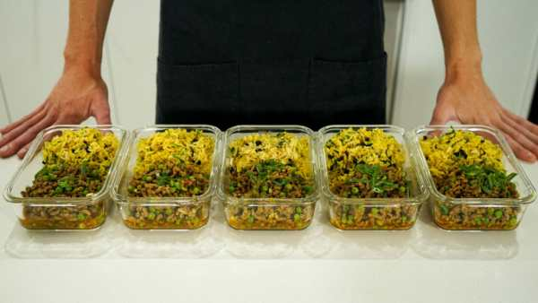
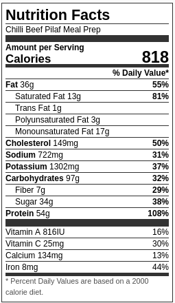

Chilli Beef Pilaf Meal Prep

From start to finish, including the prep, this sweet chilli beef rice pilaf meal prep only takes 30 minutes to make
Ingredients
Rice Pilaf
- 2 Tbsp (28g) - Clarified Butter or Ghee (Regular Unsalted Butter Can Be Used)
- 1 - Brown (Yellow) Onion, Finely Diced
- 15 - Garlic Cloves, Crushed & Finely Chopped
- 2 ½ tsp (6g) - Whole Cumin Seeds
- 1 ½ tsp (4g) - Whole Caraway Seeds
- ¾ tsp (1g) - Ground Turmeric
- 600ml (20.2 floz) - Chicken Stock
- 10g (0.3oz) - Coriander (Cilantro), Roughly Chopped
- 2 - Spring Onions (Scallion), Green Stem Only, Thinly Sliced
- 30g (1.06oz) - Slivered Almonds
- 80g (2.8oz) - Currants (Optional)
- Seasoning To Taste
Sweet Chilli Beef
- 1 Tbsp (20g) - Olive Oil
- 1kg (2.2lbs) - Beef Mince (I used 18% fat)
- 3 tsp (7g) - Curry Powder
- ¾ Cup (180ml) - Sweet Chilli Sauce
- ½ Cup (125ml) - Chicken Stock
- 4 - Spring Onions (Scallions), White Roots Only
- 2 - Spring Onions (Scallion), Green Stem Only, Thinly Sliced + Extra For Garnish
- 10g (0.3oz) - Coriander (Cilantro)
- 200g (7.05oz) - Frozen Peas
- Seasoning To Taste
Steps
Rice Pilaf
- Place a large saucepan over medium-high heat, add in the ghee & allow it to melt. Add in the onion, garlic, cumin seeds, caraway seeds & turmeric. Saute for 3 minutes, stirring frequently.
- Add in the washed rice, mix to combine & toast for 1 minute, mixing regularly. Add in the chicken stock, bay leaves and seasoning to taste. Bring to a boil, reduce heat to low, cover with a lid and cook for 12 minutes.
- Turn off the heat, leave the lid on and let sit for a further 5 minutes undisturbed. Remove the lid, discard the bay leaves, add in the currants or raisins & coriander (cilantro), mix to combine, check seasoning levels and remove.
Spiced Beef
- Place a large high-rimmed pan over high heat. Add in the ghee or clarified butter & allow to melt. Add in the beef mince & fry for 5 minutes moving it around frequently making sure it's well browned all over.
- Add in the curry powder mix well and cook for 1 minute. Add in the sweet chilli sauce, hot water, spring onion (scallion) root, ¾ of the coriander (cilantro) & frozen peas. Cook for 1 minute.
- Portion out both the pilaf and beef between 5 meal prep containers. Store and serve.
Nutrition Guide
